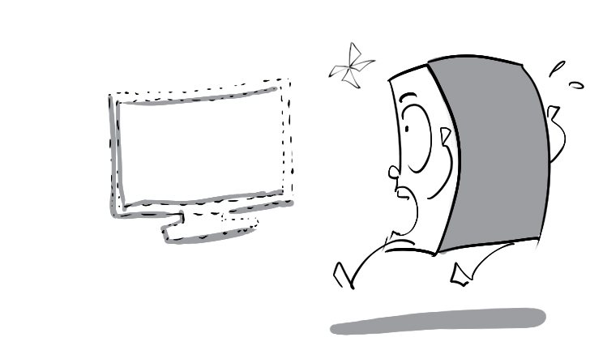
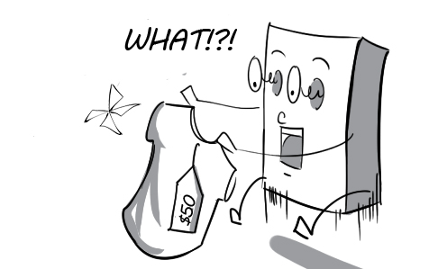
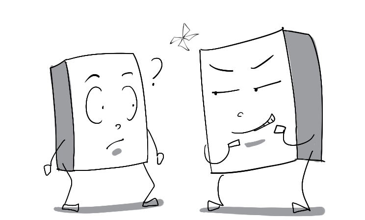
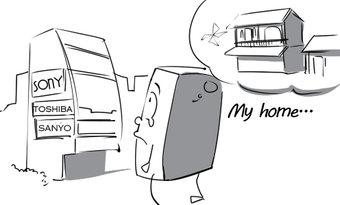
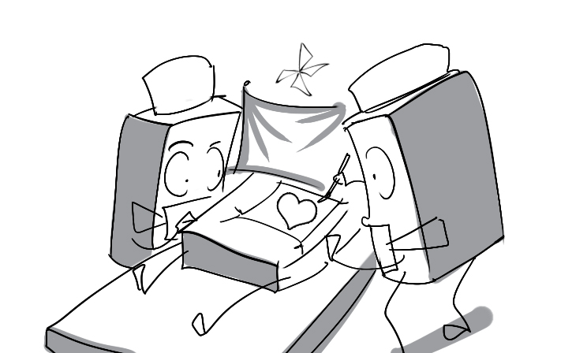

abrogate: The school board decided to abrogate the unreasonable rule this morning.
accomplice: The thief and his accomplice stole millions of dollars from a bank.
admittance: Peter was able to gain admittance to the luxury club.
anatomy: The anatomy professor is lecturing on the structure of the human body.
the Antarctic: There are many penguins living in the Antarctic.

anthropologist: An anthropologist can determine the sex of the skeleton by looking at the skull.
assassinate: The president was assassinated when he was taking a walk in the park.
bankruptcy: The director had to declare bankruptcy because he couldn't pay his debts anymore.
belligerent: The two belligerent nations are ready for a long and hard battle.
benevolent: Mr. Thomas is such a benevolent man. He is always willing to help the poor.

camouflage: The ninja's uniform gave him the ability to blend in with the surroundings.
commendable: Everybody really appreciated his commendable efforts to save the drowning man.
conceivable: Tom always forgets watering the plants, so the plants' withering is conceivable.
condolence: I give my condolences to David whose father just passed away a few days ago.
confidant: I always share my secrets with my closest confidant.
conscious: Thanks to this campaign, students are conscious of the importance of brushing teeth properly.
consecutive: Picasso painted this masterpiece in five consecutive months.
consensus: Finally, they could reach a consensus on this issue.
consultant: The financial consultant is giving the CEO expert advice on the new business plan.
consummate: Victoria is a consummate violinist.
contradict: The student's actions contradict his promises.
correlate: Cigarette smoking correlates with a greater risk of lung cancer.
corroborate: The suspect asked his girlfriend to corroborate his alibi.
cremate: My grandfather wants to be cremated when he dies.
death penalty: The man is facing the death penalty for murder charges.

deferential: Martial art students are always deferential to their master.
disarmament: According to the treaty, the complete disarmament must be achieved by December 20th.
discern: I quickly discerned that something was missing from my living room.

disconnect: Peter decided to disconnect the phone line so that nobody could disturb him.
dispel: The father's reassurance dispelled the boy's fear of the dark.
dissuade: I tried to dissuade my friend from getting into a fight.
drainage: This city has a very good drainage system.
durability: This cell phone is renowned for its high level of durability.
eccentric: Everyone makes fun of her eccentric hairstyle.
emulate: Daniel always tries his best to emulate his older brother at this game.
erudite: My uncle is a scholarly and erudite professor.
excavate: The site is being excavated by paleontologists.

exclusively: Women are unable to enter this club because it is exclusively for men.
exorbitant: The hotel laundry services are excellent but the prices are exorbitant.

exquisite: The living room was decorated in exquisite taste.
fractious: Tommy often gets fractious when his mother forced him to do something.
haphazard: Everything was piled on the table in a haphazard fashion.
hygiene: Hand washing for hand hygiene can help prevent the spread of infectious diseases.
hypertension: My father has been diagnosed with hypertension.
hypocrite: John is such a hypocrite. He always asks others to stop smoking while he is a heavy smoker.
implacable: Mary still remained implacable although Peter knelt down to ask her for forgiveness.
inadvertently: Daisy has inadvertently thrown a book at her boyfriend.
inflammable: You must be very careful when carrying this highly inflammable gas tank.

insanity: The man who suffers from insanity always thinks he is Batman.
inscrutable: Andrew gave me an inscrutable smile when I asked if he knew the new secretary.

insecticide: Using too much insecticide will poison our crops instead of protecting them.
instigate: The rebellion was instigated by the ones who were dissatisfied with the government.
invincible: Muhammad was completely invincible in the boxing ring last year.
inwardly: Although Patrick congratulated Tom on his promotion, he was inwardly envious.
juxtapose: The exhibition juxtaposed abstract painting with beautiful portraits.
long-standing: My grandfather has a deep and long-standing friendship with Mr. Peterson.
magnanimous: The winner was magnanimous in defeat and helped his competitor stand up.
meticulous: Andrew packed his luggage with meticulous care.
molecule: A molecule of water consists of two atoms of hydrogen and one atom of oxygen.

mutate: The little rabbit mutated into a giant one after being injected with the T-virus.
mythology: Odysseus is one of the most famous heroes in Greek mythology.
nervous system: The brain is a major part of the nervous system.

nostalgia: Mr. Ferguson is filled with nostalgia for the place where he grew up.

persecution: Black people were victims of racial persecution in the past.
phenomenal: The young director's first movie was a phenomenal success.
phobia: I've got a phobia about clowns.
placatory: The waiter gave the angry customer a placatory smile.
plaintiff: The plaintiff tried to prove that the defendant was guilty.
portfolio: The creative director is scanning the candidate's portfolio.

power plant: America's nuclear power plants generate 19.6 percent of the nation's electricity.

precarious: His company is in a financially precarious position.
precursor: The precursor of the modern bicycle had wooden wheels.
prevaricate: Peter kept prevaricating when the policeman asked him to show his driver's license.
primate: Gorilla is one of the largest primates in the world.
Prime Minister: Tony Blair was the Prime Minister of the United Kingdom from 1997 to 2007.

procurement: Larry has responsibility for the procurement of raw material in the company.

propagate: ABC was one of the leading channels that propagated the Iraq War.
propensity: Bobby showed a propensity for violence when he was in kindergarten.
propitious: Farmers are very pleased because weather conditions are propitious to the crops.
prowess: Charles is very proud of his prowess as a knife throwing artist.
puberty: Teenagers get acne when they reach puberty.
pugnacious: Draco is always in a pugnacious mood, which is why nobody wants to befriend him.

quandary: The prince is in a real quandary about which girl to marry.
quarantine: The patient will be quarantined in order to prevent contagion.
racial discrimination: The issue of racial discrimination of African Americans have been a long issue in American society.

rebuke: The professor rebuked Tom for plagiarizing his classmate's work.
rectangular: My friend presented me with a rectangular picture frame on my birthday.
rehabilitation: Paralyzed patients can learn to walk again at this rehabilitation center.
reptile: Komodo dragon is one of the largest reptiles in the world.
reticent: The actor was extremely reticent about his personal life.

sourness: The sourness of the lemon irritated the baby's tongue.
starvation: Many earthquake survivors are at risk of starvation in Tahiti.
suffocate: Three men were suffocated by coal fumes in the factory.
superstition: According to superstition, black cats are a symbol of bad luck.
sustenance: There is a lot of sustenance in his meal.
telescope: Telescope has contributed a lot in exploring the outer space.
transplantation: Cardiac transplantation is one of the most complex procedures in medicine.

ubiquitous: Cell phones are becoming ubiquitous, even in underdeveloped countries.
unethical: It is unethical to perform drug tests on animals.
vertigo: Martin suffers from vertigo because he has been playing video games for 5 hours.